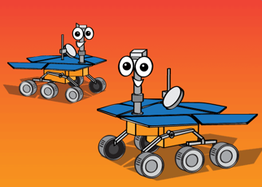
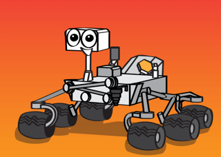
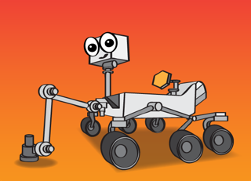

Click on rovers to see images taken on Mars

 Spirit and Opportunity
Spirit and Opportunity
Spirit and Opportunity
Twin robotic rovers lived well beyond their planned 90-day missions
Landed: January, 2004
Mission: To find evidence of water on Mars

Curiosity
Curiosity
Curiosity is a car-sized Mars rover designed to explore the Gale crater on Mars
Landed: August, 2012
Mission: To find out if Mars once had what all life needs, lasting water and the right chemicals

Perseverance
Perseverance
Perseverance is similar to Curiosity, carries a small robotic helicopter
Landed: February, 2021
Mission: To seek out evidence of former life, collect rock and soil samples, and test oxygen production from the Martian atmosphere